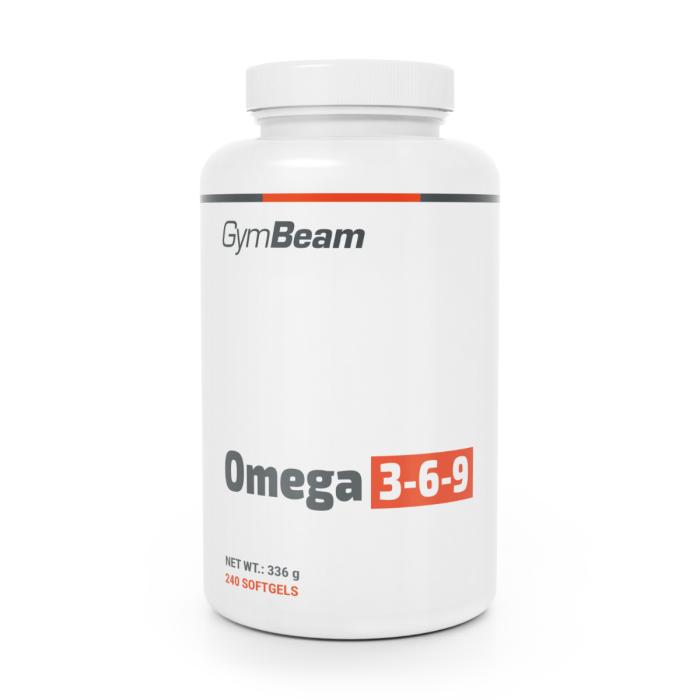

Omega 3-6-9
Omega 3-6-9 je kombinace tří typů mastných kyselin, které mají různé funkce v těle. Omega-3 podporují srdce, mozek a snižují zánět. Omega-6 jsou důležité pro růst a imunitu, ale jejich nadbytek může podporovat záněty. Omega-9 pomáhají udržovat zdravou hladinu cholesterolu. Společně tvoří doplněk, který má za cíl vyrovnat příjem všech těchto tuků.
Tento mix je oblíbený, protože mnoho lidí přijímá omega-6 ze stravy až příliš. Doplněk tak pomáhá udržet lepší rovnováhu mezi mastnými kyselinami. Důležité je vybírat produkty s kvalitními oleji, například rybím, lněným nebo olivovým. Přehnané dávky mohou narušit přirozený poměr tuků v těle. Správně užívané omega 3-6-9 mohou podpořit zdraví srdce, mozku i metabolismu.
